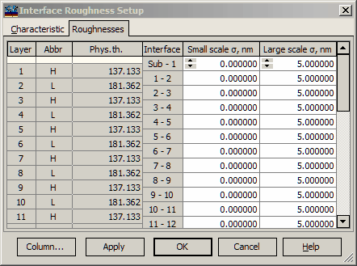

Roughnesses Setup
Roughnesses Setup
Navigation: OptiLayer Menu Commands > Analysis Menu > Interface Roughness >
Roughnesses Setup
` <interfacescattering.html>`__ ` <idh_menu_analysis.html>`__ ` <scatteringevaliation.html>`__
The Roughness page of the Interface Roughness Setup window allows setting small-scale and large-scale RMS roughness values and starting the Interface Roughness Analysis.

To specify small-scale and large-scale RMS roughness values, use cells in the corresponding columns. The “Column…” button allows access to the Column Editor, which can be used for sophisticated editing of values in columns. The “OK” button accepts specified values and starts the Interface Roughness Analysis procedure. Its results are displayed in the Roughness Evaluation window.
See also: